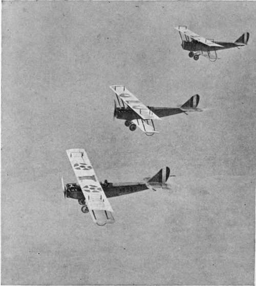
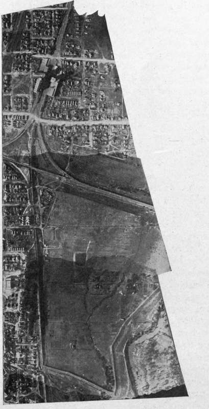

Cameras And Auxiliaries For Map Making
Description
This section is from the book "Airplane Photography", by Herbert E. Ives. Also available from Amazon: Airplane photography.
Cameras And Auxiliaries For Map Making
Mapping can be done quite satisfactorily by hand operated or semiautomatic cameras, provided the observer has not too many other duties. On the other hand, the operation of exposing at more or less definite intervals of time, irrespective of the object immediately presented to the camera, is a largely mechanical one. It naturally suggests the employment of an automatic mechanism, whose speed of operation only is it necessary to watch.
If a non-automatic camera is used the timing of exposures may be done by watching a negative lens, as described above, or by reference to a clock, assuming that the ground speed is known through calculation. A very practical advance over the ordinary use of a clock is to attach a stop-watch to the shutter release, so that it is turned back to zero and re-started at each exposure (Fig. 70). In passing, it may be noted that if the stop-watch hand makes an electric contact which throws the shutter release, then the device constitutes an attachment for turning any semi-automatic camera into an automatic.
Fig. 139. - Planes starting out to make a map by flying in parallel.
This demand has led to many suggestions for ground speed indicators. The common idea of these is to provide a moving part on the plane—either a disc of large diameter, or a chain, or a revolving screw—whose speed may be varied until any point upon it appears to keep in coincidence with a point on the moving landscape below. The ground speed is then to be read off a properly calibrated dial. Or, as a further step, the frequency of the exposures may be directly controlled by the ground speed indicator mechanism. The entire control of the camera would then consist merely in occasional adjustment of the ground speed indicator.
The most suitable cameras for mapping are unquestionably those of the entirely automatic type. The use of such cameras always demands a knowledge of the ground speed.
While entirely possible in theory, these devices aré not easy to work with in practice, because the plane is always subject to some pitching and rolling, which make it difficult to hold any object constantly on the moving point. This is especially true at high altitudes, where the apparent motion of the earth is quite slow compared to the swervings of the plane. This objection is in part removed if the ground speed indicator is carried by a gyro stabilizer.
Ordinary mapping does not demand such exquisite rendering of detail as does trench mapping. Nor is it necessary to fly in peace-time at such high altitudes as in war. In consequence, mapping cameras are preferably of the short focus, wide angle type, say, 25 centimeter focus for an 18 X24 centimeter plate. Film is to be preferred over plates because of the greater number of exposures it is possible to make on a flight. The shutter of the mapping camera must be extremely uniform in its rate of travel so that the elements of the map may match in tone (Fig. 140). A mount which permits the camera to be turned normal to the direction of flight, such as the British turret mount (Fig. 87), is particularly desirable if flying across the wind is necessary, as will often be the case in mapping strips between towns or between flying fields. Devices to indicate compass direction and altitude are called for in new and poorly mapped territory, and may be expected to receive intensive study in the future. The question of their utility is, however, bound up with the whole question of the sphere of aerial photographic mapping.
Fig. 140. - A strip map, showing effect of uneven focal plane shutter action.
Up to the present this has been almost entirely a matter of filling in details on maps obtained by the regular surveying methods, or of making pictorial maps for aviators. To what extent primary mapping can be done by the airplane is yet to be determined.
At this point mention must be made of special cameras for securing extremely wide angle views, thereby minimizing the number of flights. The Bagley camera, devised by Major Bagley of the U. S. Engineers, is an example. It has three lenses, a middle one pointing directly downward, and one to either side at an angle of 35 degrees. The pictures obtained with the side cameras are of course greatly distorted, and must be rectified in a special rectifying camera. The resultant definition is not good, but as the maps are made on a much smaller scale than the original pictures, this is not a serious objection. It is a matter for the future to decide whether the additional labor on the ground necessary for the rectifying process is to be more expensive than the extra flights which must be made with the ordinary types of cameras covering a smaller angle.
Continue to:
- prev: Chapter XXVI. Map Making. Technique Of Negative Making
- Table of Contents
- next: Printing And Mounting Mosaics
Tags
camera, lens, airplane, aerial, film, exposure, photography, maps, birdseye